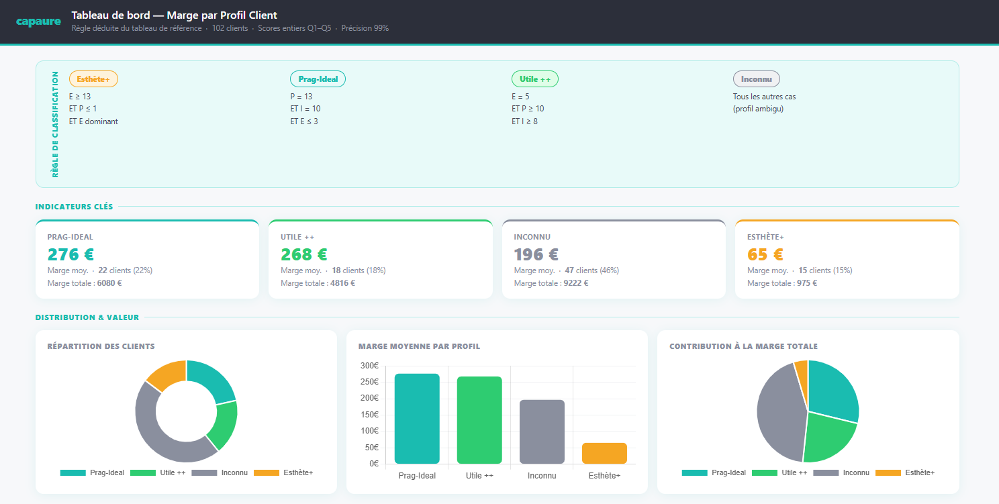
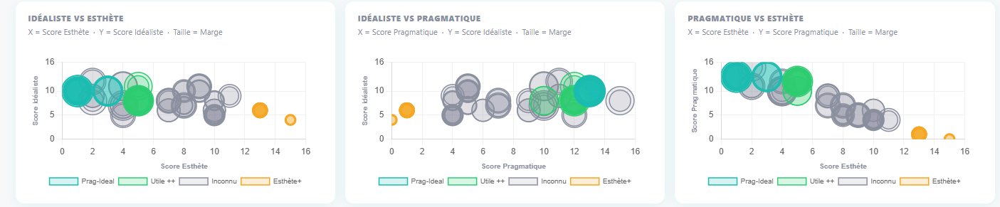

Au-delà des chiffres : des outils de pilotage concrets
Chez Capaure Data, nous transformons vos données brutes en informations stratégiques et opérationnelles, présentées sous forme de rendus clairs, intuitifs et actionnables. Loin des rapports complexes et illisibles, nos livrables sont conçus pour vous donner une vision 360° de votre activité et vous permettre de prendre les bonnes décisions, rapidement.
Nous créons de véritables "cockpits de pilotage" pour votre entreprise, adaptés à chaque niveau de décision : du dirigeant au responsable opérationnel.
Les types de rendus que vous obtenez avec Capaure Data
Nos solutions s'articulent autour de plusieurs types de livrables, chacun ayant un objectif précis :
1. Tableaux de bord interactifs (Dashboards)
Les dashboards sont le cœur de notre offre. Ils agrègent vos données clés et les présentent sous forme de visualisations dynamiques. Que ce soit pour le suivi commercial, la performance financière, la gestion des stocks ou l'efficacité opérationnelle, nos tableaux de bord vous offrent :
- Vue d'ensemble stratégique : Un aperçu rapide des indicateurs les plus importants (KPIs).
- Exploration détaillée : La possibilité de "creuser" les données pour comprendre les causes profondes des tendances.
- Personnalisation : Des vues adaptées aux besoins spécifiques de chaque utilisateur ou département.
- Exemple de KPIs : Chiffre d'affaires par client, marge brute par produit, taux de conversion, coût d'acquisition client, rotation des stocks, etc.

Exemple : Tableau de bord de marge par profil client avec segmentation, KPIs clés et visualisations comparatives.
2. Rapports automatisés et alertes intelligentes
Pour une réactivité maximale, nous mettons en place des systèmes de reporting automatisés et des alertes basées sur des seuils prédéfinis. Vous recevez les informations pertinentes au bon moment, sans effort :
- Rapports quotidiens/hebdomadaires : Synthèses personnalisées envoyées directement dans votre boîte mail.
- Alertes de performance : Notifications automatiques en cas de dépassement de seuil (ex: baisse des ventes, rupture de stock imminente, augmentation des impayés).
- Gain de temps : Fini la collecte manuelle des données, concentrez-vous sur l'analyse et l'action.

Exemple : Analyses comparatives (Idéaliste vs Esthète, Pragmatique vs Idéaliste) permettant d'identifier rapidement les opportunités et les anomalies.
3. Outils de suivi opérationnel
Pour les équipes terrain, nous développons des outils simples et efficaces, souvent basés sur des interfaces légères, pour suivre l'activité en temps réel et optimiser les processus :
- Suivi des livraisons : Optimisation des tournées, suivi des statuts en direct.
- Gestion des interventions : Planification, affectation des ressources, suivi de l'avancement.
- Qualité et conformité : Tableaux de bord de suivi des non-conformités, alertes qualité.
La promesse Capaure Data : des résultats mesurables
Chaque rendu que nous concevons a pour objectif de vous apporter une valeur mesurable. Nous ne nous contentons pas de créer de beaux graphiques ; nous nous engageons à ce que nos outils vous aident à :
- Augmenter votre chiffre d'affaires : En identifiant de nouvelles opportunités ou en optimisant vos processus commerciaux.
- Réduire vos coûts : En détectant les inefficacités ou les gaspillages.
- Améliorer votre rentabilité : En optimisant vos marges et votre gestion financière.
- Prendre des décisions éclairées : Basées sur des données fiables et actualisées.
Passez à l'action
Prêt à transformer vos données en leviers de croissance concrets ?
Contactez Capaure Data pour une démonstration personnalisée ! →